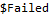

| ELLIPSES` SYMBOL |  |
PoincareEllipses
Inputs: LatitudeLines - the number of lines along the horizontal LongitudeLines - the number of lines along the vertical mm - an optional array parameter with 4-element vectors that calculate the positions of the ellipses opts - optional parameters to change the appearance of the Poincare Output: an array of values for the ellipses positions as well as any visual changes |

The default latitude and longitude lines are 8 lines.
If mm is provided, ellipse positions are recalculated to follow the depolarization surface.
Ellipse orientation is not recalculated, so ellipses will not lie in the plane of the surface.
The size of the ellipses are automatically scaled to fit within the available space as the number of squares and DOP is varied.
Opts`θStart and Opts`StartPhase, and Opts`θEnd and Opts`EndPhase are interchangeable.
Options (10)
All options used for Ellipse3D can be used with PoincareEllipse
Default Value: "LinearRainbow"
an option that allows the user to change the color of the ellipse
Default Value: 50
an option that defines the number of points plotted
Default Value: 0
an option that allows sets the start phase (in radians) for the ellipse.
Default Value: 2π
an option that allows sets the end phase (in radians) for the ellipse.
Default Value: (Thickness[0.005]&)]
an option that changes the thickness of the ellipse.
Default Value: Opaque
an option that will change the opacity of the ellipse.
Default Value: Speed
an option that will change target performance attributes.
Default Value: "Decreasing"
an option that will change phase convention of the ellipse.
Default Value: 1
an option that can be used to change the relative sizes of the ellipses

 Basic Examples (1)
Basic Examples (1)
Use PoincareEllipses to build multiple Ellipse3D graphics primitives, located on the Poincare sphere:


Graph a visual representation of the Poincare sphere:


 Options (10)
Options (10)

 PlotPoints (1)
PlotPoints (1)
PlotPoints can be used to change the number of steps:


Increasing the number of points will create a smoother ellipse.


 Opts`Color (1)
Opts`Color (1)
Opts`Color allows users to change the color of the ellipse:


 Opts`RadiusFunction (2)
Opts`RadiusFunction (2)
Opt`RadiusFunction can be used to change the radius thickness:


 Opts`ThickFunction (2)
Opts`ThickFunction (2)
Opt`ThickFunction can be used to change the thickness:


 Opts`OpacityFunction (1)
Opts`OpacityFunction (1)
Opt`OpacityFunction can be used to change the opacity of the ellipse::


 Opts`StartPhase (1)
Opts`StartPhase (1)
Opts`StartPhase changes the start position of the ellipse:


 Opts`EndPhase (1)
Opts`EndPhase (1)
Opts`EndPhase changes the end position of the ellipse:


 Opts`Phase (1)
Opts`Phase (1)
Opts`Phase changes the phase convention from “Decreasing” to “Increasing”:


 PerformanceGoal (1)
PerformanceGoal (1)
PerformanceGoal can be used to select Quality over Speed:


 Opts`ScaleEllipse (1)
Opts`ScaleEllipse (1)
Opts`ScaleEllipse allows users to scale the ellipses:


 Scope (2)
Scope (2)
Use Poincare Ellipses to plot base polarization states on the Poincare Sphere:


Note that the ellipses start tracing at pi/2 radians.

Plot more Ellipses on Poincare Sphere:


 Advanced Examples (1)
Advanced Examples (1)
Plot more Ellipses on visible Poincare Sphere:


 •
•  •
•  •
•  •
•  •
•  •
•

Building Polarization Graphics